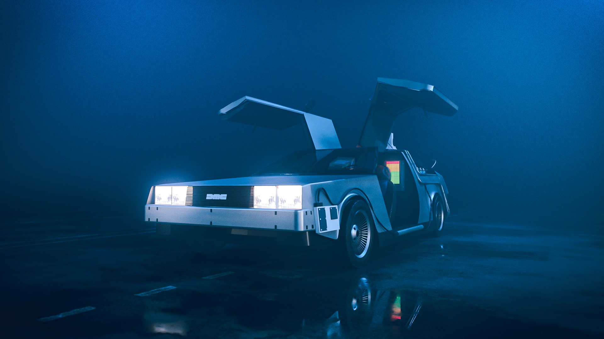
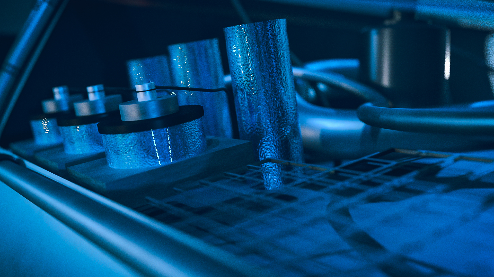
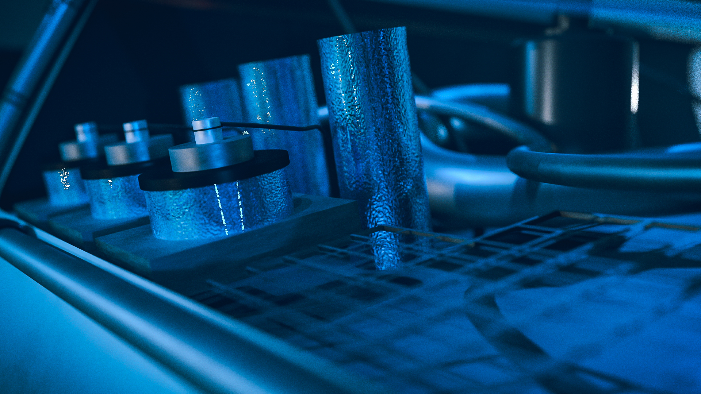
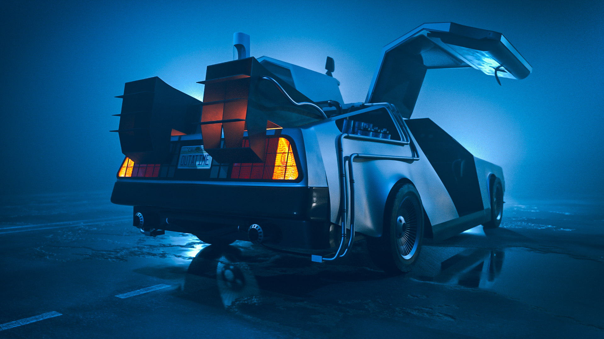

DELOREAN
Progetto di modellazione e texturizzazione 3D ritraente la Macchina del famoso film “Ritorno al futuro”
Tutto il processo creativo è stato sviluppato da me, dalla modellazione, al lighting e al texturing
Progetto realizzato con: Blender, Substance Painter

 
